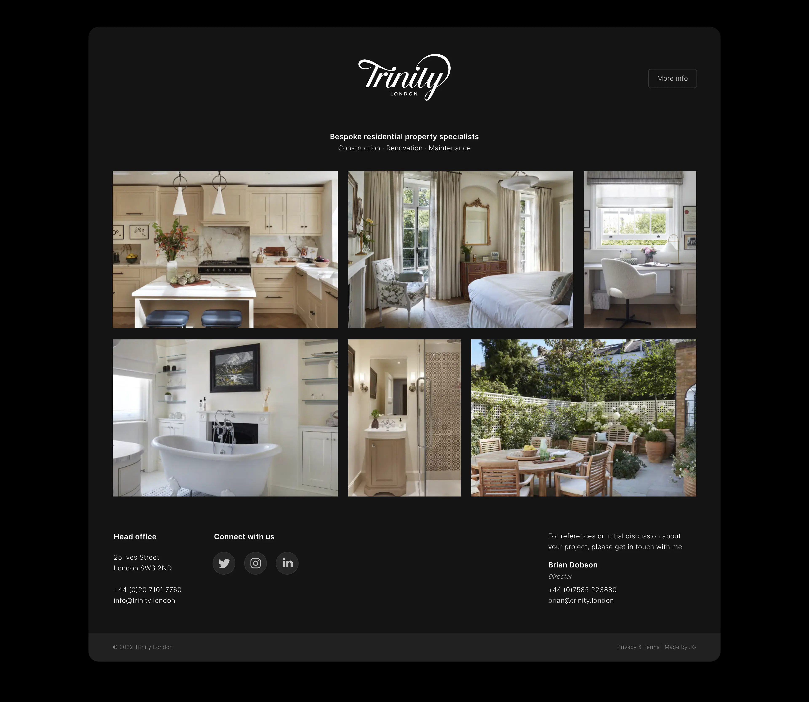
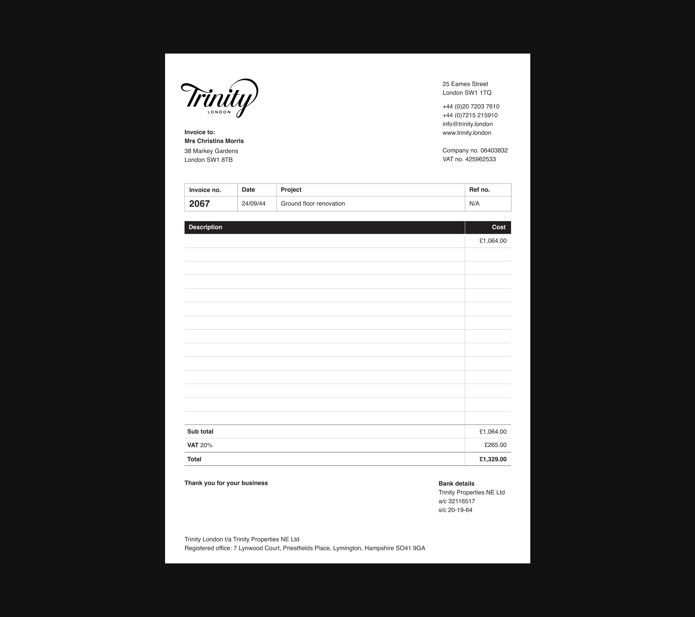
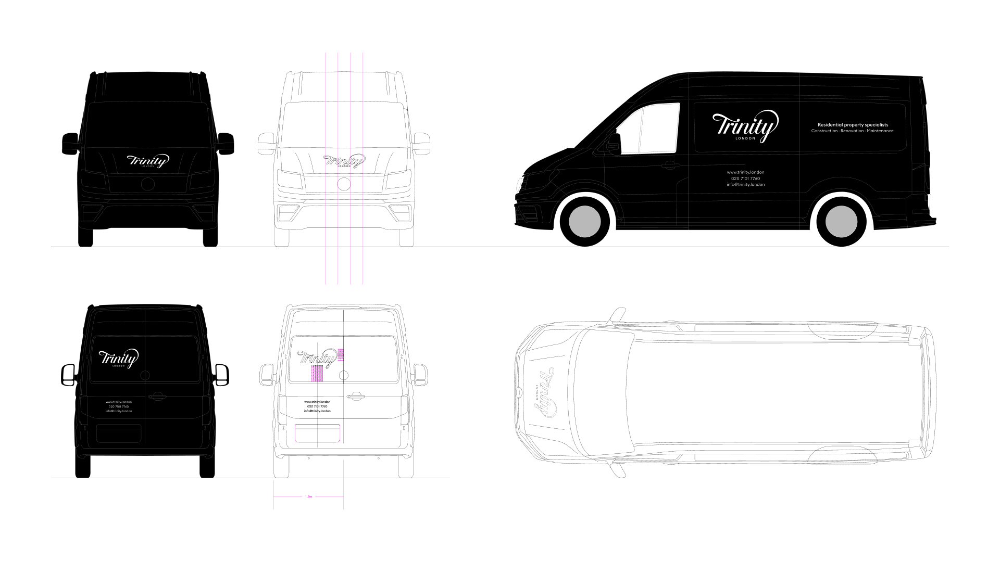
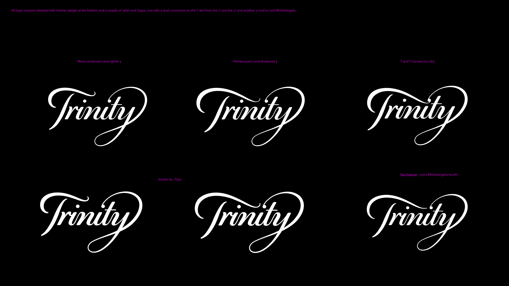

Working with some of the most distinguished and valueable real estate in London, Trinity needed a powerful and unique symbol of distinction and exclusivity amid the competitive landscape of high-end property businesses.
I crafted a logo that contains a meticulous blend of classical typography and colour with precise composition and customised flourishes to showcases this brand's commitment to luxury and excellence.

Excellence and attention to detail is communicated through clean, simple and elegant lines with their high-end craftsmanship showncased through captivating photography. Underpinning this is classic typography and graceful motion, resulting in a beautifully finished holding page.

The theme of elegance and attention to detail continues through the design of their invoice template, which is understated and exudes clarity.

The application of simple, refined, classic styling continues across the organisation's vehicles.
A rejected logo concept that I rather liked.

Another rejected logo concept I liked - this was in close contention with the final chosen concept. It is shown here in a development phase, comparing typographic detail.
This video demonstrates several small yet intrinsically important typographic refinement steps that contributed to the gradual creation of the final approved logo.